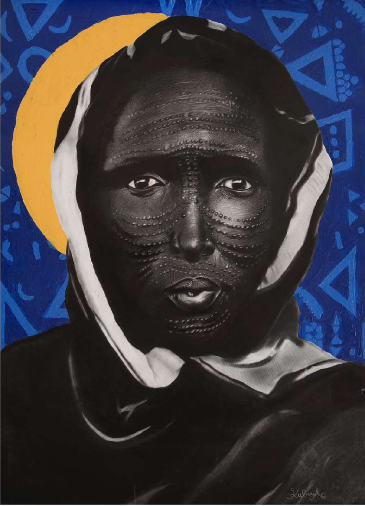

- Medium
- Size
- Year
- Series
Congolese contemporary painter, based in Kampala
I paint Black pride, African memory and identity through large-scale portraits where charcoal meets ancestral symbols, textile patterns and sacred colour. Each face is an act of restoration.

Now: Dakar Biennale
(ANTI)FRAGILITÉS : ALLIAGES at Galerie Kaalûm, Dakar, Senegal
19 November to 19 December 2026
Selected works
Charcoal, acrylic, oil, pastel and collage on paper. Monumental faces carry scarification, textile motifs and ritual ornaments. Click any work to view it large.
Series
Fifteen large-scale portraits reclaiming Black pride, heritage and future. Charcoal faces crowned with ancestral symbols, halos and sacred colour. The founding manifesto, born in 2023.
An experimental series in acrylic, collage and charcoal, wandering through shadow, texture and fragmentation. Genesis, The Red Nails and Transmission explore Blackness as labyrinth and as home.
The new series, in progress for Dak'Art OFF 2026. Ten portraits carrying one conviction into the world: we are already enough as we are.
“My art is a mirror for those who seek to reconnect with their origins, to see themselves represented with dignity, strength and humanity.”Kabeya Ilunga, Artistic statement
Journey
2004, Goma
Born in Goma, DR Congo, a city where many traditions intersect, shaping an early awareness of identity, beauty and collective memory.
2023, Nakivale
After years away, returns to drawing from the Nakivale refugee camp in Uganda. AFROCENTRIK is born: fifteen portraits of Black pride and memory.
2025, Kampala & beyond
Kiggundu Art Studio, Makerere Art Gallery and Nafasi Art Space in Dar es Salaam, followed by group shows in Berlin and Brussels. Young Leaders for Arts and Health summit.
2026, Abidjan
Selected to represent Uganda at the international fair of young visual artists (FIJAP) in Abidjan, with a residency, an exhibition and two works sold.
2026, Dakar
Invited to exhibit at the Dakar Biennale OFF with Galerie Kaalûm for (ANTI)FRAGILITÉS : ALLIAGES, from 19 November to 19 December 2026.
Contact
Commissions, exhibitions, press and acquisitions. Write to the studio.